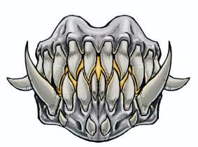

最初的时光里，自然世界的天命诸神们决定同凡人分享他们的礼物，教他们征服自然。阿拉瓦依教会了最早的农民，木工和药草师，同时巴力诺示范如何捕猎，如何同马匹和猎犬共事。阿拉瓦依和巴力诺全心全意升腾我们，但也有他者全心全意扯落我们。吞噬蔑视最初的凡人和他们的文明，视他们为猎物。斗争持续到今天。阿拉瓦依演示如何驾驭风，驱动船帆和磨坊，而吞噬派遣风折断桅杆，毁灭建筑。寇柯兰教我们建造船只，而吞噬乐于沉没它们。欧纳塔教我们掌控火焰，而吞噬在失控烈火吞没城市时露出微笑。天命诸神在我们与大自然共处时教导我们—但我们要小心，要警惕，因为吞噬永远准备将狂野的力量带到我们头上。
——帕萨索.摩根（Phthaso Mogan），萨恩的高阶祭司
你们人类认为荒野必须被驯服。你们同它搏斗，将它囚于田间，用皮带和锁链束缚它。我们拥抱风暴，与风一起奔跑，与火一起舞蹈。我们明白烈焰是为新生开辟道路，淘汰弱者增强大众。你们害怕吞噬，我们就是吞噬。
——凶众的卡尔卡拉（Khaar’kala of the Great Pack）
探秘艾伯伦如此描述吞噬“他是海啸，淹没最高大的帆船；他是野火，吞噬最宏伟的城堡；他是地震，夷平最壮丽的城市。他是自然原始又无边的权能，暴力足以挣脱一切锁链，推倒最坚固的墙。吞噬是愉悦的残忍，驱动了猎食者；是鹰的啼鸣，狼的嚎叫。他是完全的的狂野，不开化，不可预测。一股可以跨越但永远无法掌控的力量。“
阿拉瓦依和巴力诺代表凡人对自然世界的支配。阿拉瓦依赐予凌驾植物的力量，巴力诺赐予凌驾动物的力量。但吞噬提醒我们，荒野不可能被真正束缚。我们不应过于傲慢或自满；我们不应忘记尊重自然力量。因为如果这样，吞噬就一定会降临，带来风，带来烈火，带来爪和牙。
正如本节开头引用帕撒索.摩根的名言，派里尼信条宣称天命诸神向他们最初的追循者示范如何操纵自然世界。阿拉瓦依教人们收获庄稼，巴力诺教人们捕猎野兽，二者都反映我们将意志强加于自然的能力。相对的，吞噬表明我们永远无法彻底掌控自然和它引发的灾害。正是吞噬以野火和飓风沉没船只，夷平村庄。也正是吞噬教会群狼捕猎我们的绵羊。
依照派里尼信条，吞噬绝无仁慈的一面。吞噬，阿拉瓦依，巴力诺并非以特定手段造成后果。追循者们常把阿拉瓦依同润物无声的细雨关联，又把吞噬同冲刷一切的暴雨关联——但如果过量的细雨造成毁灭的洪流，它就是吞噬的手段，并且如果一个地区靠雨季灌溉土地，追循者们就把这些孕育中的暴雨看成阿拉瓦依的礼物。一名牧人会咒骂掠食的狼群是吞噬的牙齿，但他们也会完全用瓦塔利斯家族培养的魔育动物来保护牧群。一匹狼是和巴力诺还是吞噬有关取决于和它互动的结果。
尽管这种观点将把所有残酷都归因于吞噬，吞噬仍是追循者生活和信仰的一部分。感激阿拉瓦依指导的农民也会同等恐惧吞噬的怒火，经常和危险自然力量打交道的追循者们，常会献上贡品安抚吞噬。追循者常言“吞噬会得到他应得到的。”如果你从自然世界中获益，吞噬终将降临，扫荡自然的异物—但如果你甘愿上贡，那吞噬可能接受，放你一马。追循者们一般在收获后焚烧小部分收成；质疑者只会焚烧废料，而信徒们则按照自己丰收的和无奈失去的来焚烧。追循派水手们相信寇·柯兰会指引他们，但许多也会在船只抵达深水区时献上贡品来讨好吞噬。贡品可以是任何东西，从一顶头冠，一缕头发，一首诗再到其他财宝；贡品取决于航海中感知到的危险，还有他们认为自己站在深海霸主的哪个方位。再次强调，这里没有宽仁的说法。多数水手都将把它当作和危险的对手打扑克—你了解敌人多少？你能在航行中躲掉什么？尽管这些迷信很普遍，但部分船长绝不容忍在他们的船上出现相关活动；他们坚信这是对资源的愚蠢浪费，或单纯相信向吞噬上供与其说讨好他，更可能引起他的注意。
在三面和给吞噬上贡者外，五国中是有少数吞噬信徒的。吞噬而是一股理应被恐惧和安抚的力量，而非被崇拜。因此，吞噬的拥护者世间少有，过目难忘，而且万分危险。
极少数情况下，吞噬的行脚祭司会游历各个农耕地区。当这样一名风暴先兆来到某个社区时，他（译者注：原文为they，但联系上下文应是指代一名风暴先兆）会召集所有追循者并带领他们组织一次社区宴会。宴会上，先兆鼓励大家讨论他们的收成和损失，他们从天命诸神处得到的祝福，还有他们亏欠了吞噬什么。他们在宴会当场就进行献祭，还会额外在宴会上焚烧一部分祭品。做这些事同时，居民们希望这些能让风暴先兆为他们换来一段富足时期，在先兆离开时将灾难一并带走。风暴先兆特别少见，对他们的了解主要来自各种故事。一些相关传说形容他们是真心帮助无辜者躲避灾害的善人，其他人则形容他们是诈骗保护费的诈骗犯——“满足我，不然很快就要闹灾了”
天光权杖一般只出现在故事和戏剧中，以受吞噬祝福或诅咒的人物形象出现。不论他们来到何处，都要引发灾害，并且一直为猎食者、恶劣天气、自然火灾和其他次要现象所折磨。他们呆在一个地方越久，这些现象就越严重。故事中，有些电光权杖致力于武器化这些现象，成为了风暴血脉术士或古贤之誓圣武士——但就算这些斗士们也需要不断奔波，避免紧咬不放（译者注：原文dog their heels 为俚语，意为跟随，并因为跟随导致被跟随着改变行动）的灾害毁灭他们关心的人。
吞噬的狂信者是蔑视文明和工业的极端分子。典型的狂信徒会因文明的具体表现而勃然大怒——一座新的萨拉释克矿脉，一个瓦塔利斯牧场，一列穿过他们田地的闪电列车，甚至只是砍伐一片宁静树林的当地农民——同时他们要毁灭对方的强烈执念便会激活非凡的力量。吞噬狂信者比起德鲁伊教派，同黄泉巨龙会的共同点更多；如果狂信者和观念类似的狂信者联合，或积累追随者，这样形成的教派教派通常缺乏组织度或深层传统。一旦狂信者达成目标，他们可能放下痴狂，回归正常生活…或者他们可能追逐更大的目标—摧毁村子附近的欧瑞恩马场（译者注：原文为ranch，表示规模很大的牧场，考虑到欧瑞恩家族也经营马匹运输，故翻译为马场），他们现在执着于破坏邻近城市中的家族，此类行径会越来越恶劣，直至他们死在战斗中。当狂信者同野之三面（Three Faces of Wild）勾结时，他们对破坏目标的痴狂，和对超自然力量的支配程度也一直增加；一个三面教派可能会试图同侵害环境者进行谈判或另寻和平的解决办法，但狂信徒视自己为荒野的复仇之手。